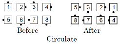
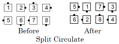
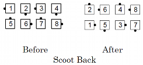
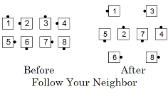

T-Bone Formation
Definition: A T-Bone formation is one where some people are in lines or waves and some are in columns, e.g.,

To do a call "T-Bone", do your part of the call, regardless of how the other people are facing. For example:




The caller does not actually say the words "T-Bone". Dancers are expected to recognize the formation and do the call accordingly.
© Copyright 1983, 1986-1988, 1995-2017 Bill Davis, John Sybalsky and CALLERLAB Inc., The International Association of Square Dance Callers. Permission to reprint, republish, and create derivative works without royalty is hereby granted, provided this notice appears. Publication on the Internet of derivative works without royalty is hereby granted provided this notice appears. Permission to quote parts or all of this document without royalty is hereby granted, provided this notice is included. Information contained herein shall not be changed nor revised in any derivation or publication.